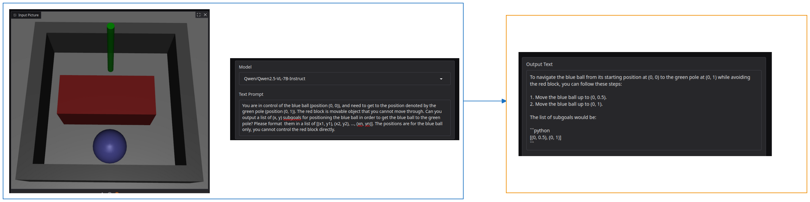

2025 Sep 26
Last time, we talked about a lot of things.
VLMs have been used for planning (and related things) in a few papers. One fairly well-cited Deepmind paper used a VLM in tandem with a learned policy to generalize to objects not in the policy’s training distribution [1]. A 2025 ICRA paper [2] proposes using a feedback loop where if failure of the plan is detected, they reprompt the VLM. This is done after the failed execution has already taken place. Also in ICRA was the BUMBLE [3] paper, where a VLM takes the place of a planner. They prompt the VLM for multiple things and have a way of maintaining a “memory” that they divide into short and long term and put in the context window when prompting. They also use a skill library. Another paper that leverages VLMs that is well cited that I may have mentioned before is Rekep [4], where a VLM proposes keypoint-based subgoals and constraints in python code, which are then used for a constrained optimization solver. They have a prompt for the VLM that is over a page long and kind of feels like cheating. I have also mentioned [5] before, where a VLM outputs predicates. TAMP meets VLMs in [6] as well (but I didn’t really read it). Perhaps the most similar idea to what you mentioned last meeting is [7], which I talk about in the next subsection. Another one that explores using VLMs for replanning is [8]. Some other uses of VLMs in robotics can be seen in [9] and [10] among others.
Side Note: here is the failure breakdown for the BUMBLE paper, which I feel like is quintessential “big VLM do everything” paper:
The things I noticed include: the wide range of different failures, how the VLM reasoning failed in 28 of the trials, and that the end reasons with 7 trials each were (robot collision, having too many detractors, and bad depth values).
Here are some screenshots from the project page of [7], where they reprompt a VLM when the PDDL/Motion planning solver fails:


They tell the VLM that it failed, the (discrete) sub-goals that didn’t work, as well as a set of objects that had collisions with the robot. The experiments kind of showed this re-prompting to be successful.
I tried to run a slightly harder version of the previous dummy environment to a VLM and it kind of sucked. I don’t think this is necessarily what will always happen, but I think it is indicative of how it matters what you prompt and ask the VLM to do specifically for performance. Here is the image of the result:

Clearly, that will not work. Also, I know that this is possible because I threw together some hacky keyboard control and I was able to solve it, although it does take quite a bit of wiggling.
I have previously done an overview of similar papers to this task. Here I simply mention a couple more papers to be aware of. I think [11] is indicative of the simplifications common in papers doing manipulation in cluttered shelfs, from what I have seen. Specifically, they (1) assume all objects are cylinders and (2) ignore non-prehensile manipulation such as pushes. Of course, in link in the first paragraph, I overview literature that makes use of non-prehensile manipulation in clutter. Of course there is work that doesn’t use these assumptions, such as [12].
I think that manipulation in a cluttered shelf is cool. I think at some point I want to do a project with it. I think after my first project is in a reasonable place, there might be room for something like this: See a cluttered scene \rightarrow infer a dynamics model on-the-fly \rightarrow use some combo of planning+control to do manipulation. I think there such a setup, if done right, would be publishable. Of course, there are also some other cool things to think about with a cluttered shelf setup, such as: